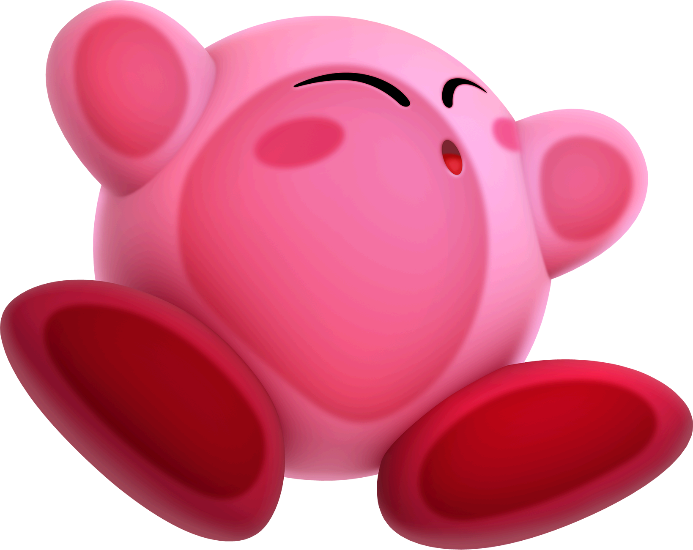

Who is Kirby?!

Physical appearance
Kirby has a pink, spherical, body with small stubby arms and large red feet. His eyes are a distinctive oval shape and are white (eye shine) at the top, black in the center and dark blue on the bottom (all black in early games) with rosy cheek-blushes near his eyes. His body is soft and flexible, allowing him to stretch or flatten and adopt different shapes, open his mouth really wide to inhale foes, or inflate himself with air and fly. According to the Super Smash Bros. manual he is 8 inches (or 20.32 centimeters) tall, however the games themselves are inconsistent with Kirby's height. Kirby's appearance has changed subtly over the years, becoming more rounded and defined, mainly in his face and larger blue eyes. The new design has been used in all subsequent games. ..
Personality
Kirby hails from the distant Planet Popstar, where he lives in a dome-shaped house in the country of Dream Land. He has a positive attitude, and frequently helps to save Dream Land through the use of his unique powers. His age is never directly stated, although he is referred to as a "little boy" in the English manual for Kirby's Dream Land, described as a baby in the anime, and was referred to as being a "jolly fellow" in Kirby Super Star.
Kirby is cheerful and innocent. He is often depicted with a voracious appetite. His other hobbies include singing, although he is tone-deaf.
The same personality and nature is presented in the Super Smash Bros. games. In Super Smash Bros. Melee, his trophy profile states that he is an "extremely skilled technician". Kirby plays a prominent role in the Subspace Emissary plot as a protagonist, the story mode of Super Smash Bros. Brawl. Although he appears cute and innocent, many commercials and ads have contrasted this with his extreme fighting skills when he takes on the abilities of an enemy.
Kirby is a character of few words and rarely speaks in-game. His dialogue is largely limited to appearances in some games' instruction manuals, and brief comments such as "Hi!" or "Poyo!" in games including Super Smash Bros. and Kirby 64: The Crystal Shards. Despite his lack of dialogue, Kirby narrates the functions of certain Copy Abilities on the pause menu in Kirby: Nightmare in Dream Land, Kirby & the Amazing Mirror, and Kirby: Squeak Squad. Kirby gives short descriptions of various menu options when they are highlighted. The concept of Kirby being mostly mute is supported by Masahiro Sakurai's insistence that Kirby does not speak in the anime series, although he does occasionally say the names of his special attacks and certain foods and sometimes repeats other words that he hears. In the Super Smash Bros. series, when Kirby copies a foe's ability, Kirby says the name of some attacks, such as Captain Falcon's "Falcon Punch", Ness' PK Flash, Lucas' PK Freeze, Ryu's Hadoken/Shakunetsu Hadoken, "Jump/Speed/Shield/Buster/Smash" when using Shulk's Monado Arts and Terry Bogard's Power Wave. There are some notable exceptions where Kirby actually does speak in-game, such as Kirby's Avalanche, Kirby no Kirakira Kizzu and Kirby's Epic Yarn.
Despite his loveable nature, he sometimes acts in an impulsive or naive way, such as when he accuses King Dedede of interfering with the Fountain of Dreams in Kirby's Adventure, and then leaves to retrieve the pieces of the shattered Star Rod without receiving a full explanation. He also attacked Meta Knight in Kirby Squeak Squad for ownership of a chest that he believed contained a slice of his stolen strawberry shortcake. In reality, the Star Rod was going to be taken by Nightmare, who would corrupt the Fountain of Dreams and turn every dream into a Nightmare, and the chest that Kirby wanted contained Dark Nebula, a powerful being with evil intentions. King Dedede and Meta Knight were aware of these problems, and were trying to protect the world.
Abilities
Kirby can gain the properties of enemies or objects he eats. For example; by inhaling a sword wielding foe, Kirby becomes a skilled swordsman.
Kirby's main ability is inhaling enemies and objects and spitting them out with incredible force. Both his mouth and body expand to allow him to inhale things much larger than himself. However, there is a limit to what he can inhale; excessively large or heavy foes like bosses can resist Kirby's inhale. Against these opponents Kirby must find smaller objects to use as ammo or intercept his opponent's attacks and send them back at them.
Kirby is able to float like a balloon by inhaling a gulp of air to make himself more buoyant, flying slowly by flapping his arms. However, his only method of attack in this state is to spit the gulp of air, sending him back towards the ground. While in most games he can float indefinitely, he gets tired in some games such as Kirby 64: The Crystal Shards, Team Kirby Clash Deluxe, Kirby Fighters Deluxe and Super Smash Bros..
Kirby's main mode of transportation is a star shaped, flying vehicle called a Warp Star. By clinging to its side or riding it like a surfboard Kirby is able to move quickly through the air and travel quickly between areas.
From the second game onwards, by swallowing foes, Kirby can copy their primary attribute, called a Copy Ability. Giving Kirby new abilities such as gaining fire abilities from inhaling a fiery creature or the ability to shoot needles from his body by eating a spiky creature. Kirby can only have one Copy Ability at a time and must discard his current one if he wishes to use another. Additionally, if he takes too much damage his Copy Ability will be knocked out of him; though if he's quick he can inhale it again.
Kirby Super Star greatly expanded on the concept of Copy Abilities from Kirby's Adventure. Originally Kirby just obtained one technique from a Copy Ability which replaced his Inhale but Kirby Super Star introduced multiple fighting techniques for each ability with their own controls. Additionally while Kirby's Adventure didn't have Kirby's appearance drastically change when he had a Copy Ability, aside from his color changing to orange or snow white, or wielding a weapon for abilities like Sword or Hammer. Kirby Super Star gave each Copy Ability its own costume, such as a fiery crown for Fire Kirby or a floppy green cap that resembles Link's for Sword Kirby.
In Kirby Super Star, Kirby could sacrifice his current Copy Ability to create a 'Helper', an allied version of the enemy Kirby typically gets that ability from.The new Helper could be controlled by the game or a second player. This feature has not yet been included in later Kirby games, although it was included in Kirby Super Star's remake, Kirby Super Star Ultra and was intended to return in the cancelled Gamecube Kirby game which would have had Kirby able to make up to four helpers at once. In the game Kirby Star Allies, the game’s main mechanic is similar to this, but with now up to 3 helpers.
Other games have developed his powers even further, often with new ways to utilize his Copy Abilities. As a whole, however, his basic moves have remained the same. In Kirby 64 Kirby can combine two Copy Abilities to create new ones. This returns in Kirby: Squeak Squad in a limited form, but only with Bomb and Sword which are both able to combine with Ice, Fire, and Spark. In Kirby Star Allies, this returns again with more combinations available to the player.
In Kirby's Return to Dream Land, some Copy Abilities received enhanced versions called Super Abilities. Stronger than normal Copy Abilities, Super Abilities are capable of destroying scenery and interacting with the environment but unlike normal Copy Abilities their use has a time limit. Likewise, in Kirby: Triple Deluxe, Kirby can eat a Miracle Fruit to become Hypernova Kirby, giving his basic inhale ability a temporary boost that allows him to inhale huge objects.
In addition to his natural and Copy Abilities Kirby makes use of a variety of power-ups and items. In Kirby's Dream Land, Kirby's first appearance, Kirby did not have Copy Abilities. He collected power ups, such as a mint leaf, which enabled him to shoot out endless air pellets for a limited amount of time, and super spicy curry, which let Kirby shoot out fireballs from his mouth until the item's effect wore off or he lost a life. Kirby uses food or other special items like Maxim Tomatoes or Invincibility Lollipops to heal his health or gain temporary invincibility in the case of the lollipop. Kirby Super Star, Kirby Super Star Ultra, Kirby & the Amazing Mirror and Kirby's Return to Dream Land contain a feature where Kirby can share his food with the second player.
In Super Smash Bros. Brawl, Kirby's Final Smash is his Cook ability from Kirby Super Star, which cook opponents, items and more. In Super Smash Bros. for Nintendo 3DS and Wii U and Super Smash Bros. Ultimate, Kirby's Final Smash is an Ultra Sword attack.
In Kirby's Epic Yarn and its 3DS remake, at the start of the game, Kirby inhales a yarn-based Maxim Tomato (referred to by Yin-Yarn as a Metamato) transforming him into yarn, granting Kirby the ability to transform into a car, a surfboarding penguin, a UFO, and many other forms. Also, since Kirby cannot suck up enemies in this game (since air just goes through him), he uses a yarn whip to grab enemies and turn them into yarn balls, which can be thrown at other foes, attached to buttons, move zippers and more.
Species
Although never explored in great detail in the series, Kirby is not the only member of his kind. Similar looking characters are seen in the ending of Kirby's Dream Land, and its remake Spring Breeze in Kirby Super Star. Meta Knight and Galacta Knight, both of whom bear a close resemblance to Kirby without their masks are often hinted to be of the same species as Kirby. In general, members of the species all look similar, but sometimes have different colored skin, eyes, and feet.
No official term exists for them other than Kirby's species. They are commonly referred to as 'Kirbys', just as Yoshi in the Mario series is the name of both the species and character. As a name, however, 'Kirby' refers to only one character. In the English manual of Kirby & the Amazing Mirror, the term 'Kirbys' is used at points, to illustrate the feature of having four differently colored versions of Kirby active in the game simultaneously, although in this situation the four "Kirbys" are four pieces of Kirby rather than four individual Kirby-like beings. Another common term is 'Dream Landers', a term used in the instruction manual for Kirby's Adventure. This term, however, also refers to anyone who lives in Dream Land, including characters like King Dedede. The biography of Kirby in Super Smash Bros. Brawl says Kirby is a citizen of Dream Land. Sometimes the term 'puffballs' is used referring to the species' round shape.
In Kirby: Nightmare in Dream Land, Kirby's Return to Dream Land and Kirby & the Amazing Mirror, different colored Kirbys appear as other players in multi-player games. In the case of the latter, they are the result of Kirby being divided into four by Dark Meta Knight.
In the anime, Kirby has also been called a Star Warrior, along with Meta Knight and other characters that have appeared in the Kirby animated series. It is said that Kirby is just a young Star Warrior or an underdeveloped one. In the first episode of the animated series, Kirby's space ship prematurely crashed on Pop Star. The trip was supposed to take him several hundred years and in that time he was supposed to be dormant; however, his ship drifted into a space rift causing it to warp to Dream Land and making his trip shorter, not allowing him to develop into the Star Warrior he was going to become. Kirby was also called a Warpstar Knight or a Warpstar Warrior, but this was only occasionally seen in select advertisements.
In Kirby's Dream Land 3, a mysterious enemy appears called Batamon, notable for its resemblance to Kirby aside from a more flattened shape and different face. These creatures are always seen walking past walls or ceilings beyond Kirby's reach, with the exception of a single stage in Cloudy Park, where Kirby can continue past the exit and come into contact with some.
|